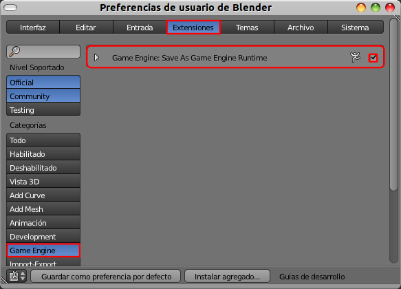

Autoejecutable
Cuando reproducimos la simulación con el reproductor integrado de Blender se abre una ventana emergente y se ejecuta el programa.
Las opciones de Resolución no requieren ninguna explicación siendo realmente interesante Pantalla completa y acto seguido activar Desktop para que el autoejecutable se adapte a la resolución que tenga el usuario.
La idea de crear un autoejecutable es conseguir ese mismo efecto pero sin necesidad de lanzarlo desde dentro de Blender; incluso sin la necesidad de tener el propio Blender instalado.
Debemos activar la extensión (Archivo/Preferencias de usuario) denominada Save As Game Engine Runtime.
Antes de exportar lo mejor es crear en algún lugar una carpeta para este fin, por ejemplo en el Escritorio.
Ya en el entorno de trabajo encontramos la opción en Archivo/Exportar/Save As Game Engine Runtime.
Le damos un nombre y lugar de detino. Ya tenemos el autoejecutable. En el caso de Windows se crea un buen repertorio de librerías .DLL. En este ejemplo para Windows nuestra simulación se llama juego.exe.
En Linux y MacOSX el producto final es más simple al no tener que añadir librerías.
Exclusividad
El autoejecutable sólo funciona en la plataforma en la que ha sido creado. Es decir; que un autoejecutable fabricado en un Blender bajo Windows no funciona ni en un sistema operativo Linux ni en uno MacOX de la misma manera que un Blender compilado para un sistema no puede instalarse en otro.